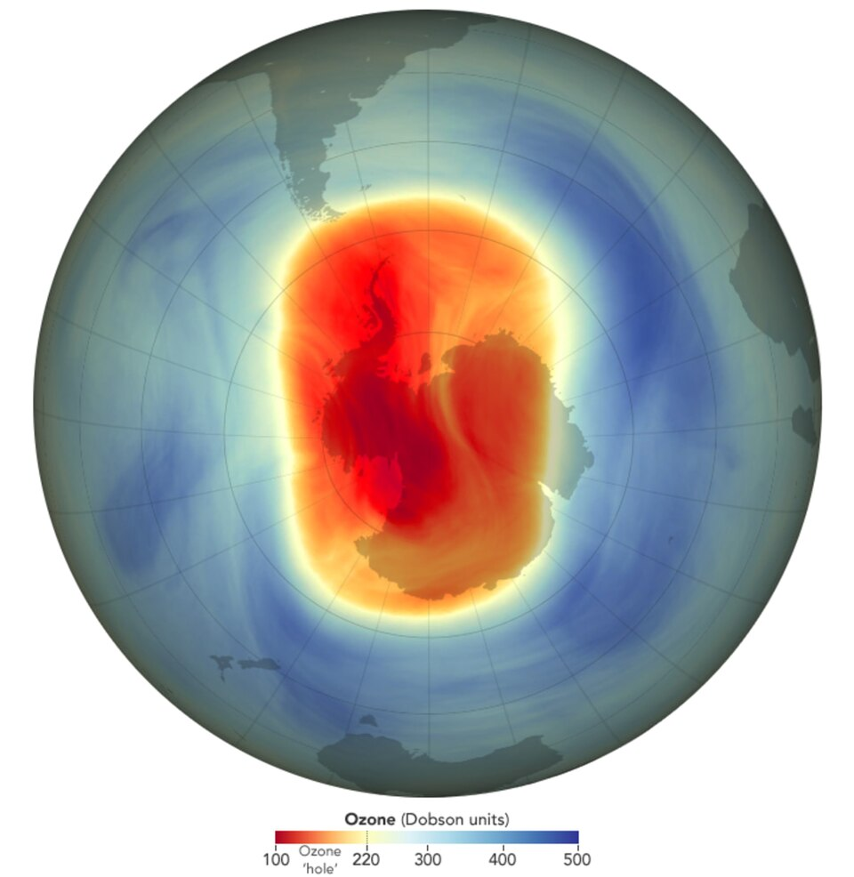

DOSSIER A42-CE-26 // CLIMATE & ENVIRONMENT
The Antarctic ozone hole is fabricated

.jpg){kind=link}
The claim
Claim: ozone depletion was invented to regulate refrigerants. Ground, balloon, and satellite instruments observed severe springtime loss. This file tests the narrow allegation rather than treating secrecy, coincidence, or public controversy as evidence by themselves.
Chronology
British scientists reported low Antarctic ozone in 1985; satellite filters had missed extremes and were corrected. Chronology helps separate contemporaneous knowledge from later interpretation; sequence alone cannot establish a causal relationship.
Primary record and data
Dobson instruments, sondes, satellites, and papers independently document depletion. Original records establish what was measured or decided, while independent work is needed to test methods and institutional conclusions.
Independent scientific evidence
CFC chlorine and polar clouds explain ozone loss; chemistry matches its season and altitude. Convergent observations and a plausible mechanism carry more weight than a single image, anecdote, or disputed quotation.
Alternative explanations
Early satellite filtering missed anomalous values; correction is documented and not evidence all observations were fabricated. A strong alternative must explain the observations and remain open to disconfirmation; ordinary causes deserve the same scrutiny as extraordinary ones.
Limitations and uncertainty
Long records include coverage changes, instrument uncertainty, and methodological choices; independent datasets and explicit uncertainty ranges help bound conclusions. Uncertainty is stated explicitly rather than treated as support for the strongest version of a claim.
Calibrated verdict
The ozone hole is measured; fabrication claims conflict with independent records and chemistry. Documented research, emissions, negligence, or secrecy should not be conflated with a broader unsupported coordinated plot.
Testable evidence requirements
Compare original/reprocessed satellite data with ground and balloon series; monitor recovery against stratospheric chlorine. A persuasive claim specifies what new evidence would change the assessment and allows independent replication, including negative results.
Sources and source limits
- NASA Ozone WatchSatellite maps and documented retrieval methods.
- Farman et al., Antarctic Ozone Loss, Nature (1985)Peer-reviewed ground-based discovery.
- WMO/UNEP Ozone AssessmentsInternational synthesis of ozone chemistry and observations.